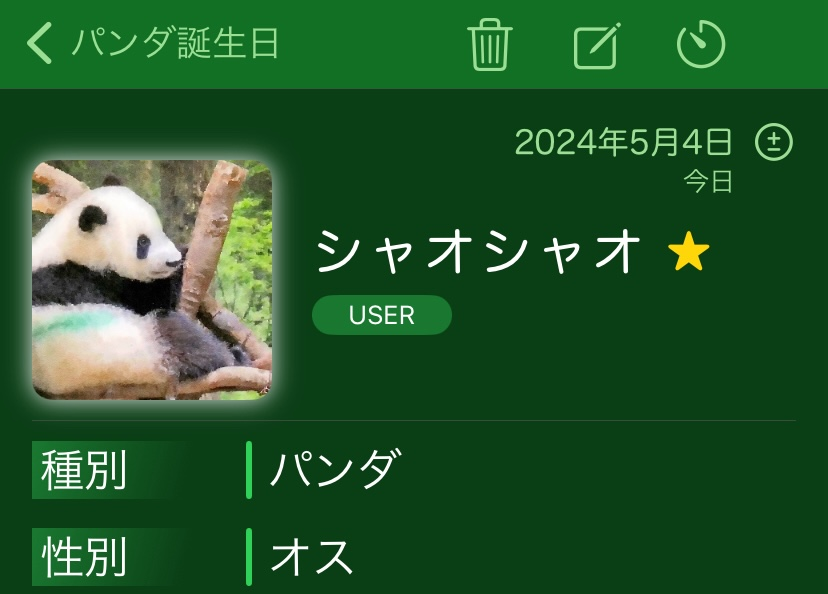
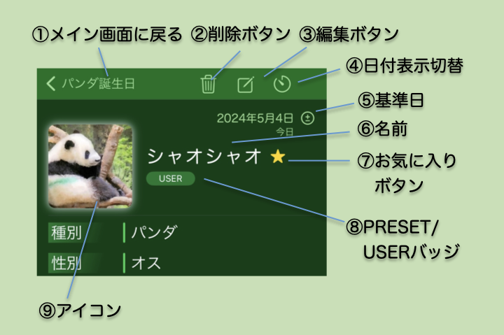

詳細情報画面

- メイン画面で情報欄をタップして移動してくる画面です。
- メイン画面で選んだパンダやユーザー登録情報の詳細情報を表示します。
- パンダや情報の種類によって表示される項目も変わります。
- 誕生日などの日付をタップするとその日付を基準日にセットできます。これによってこのパンダが生まれた時に両親や兄弟が何歳だったかとかがわかります。
- また、日付を他のデータの出来事に追加することもできます。これによってパンダの誕生日などを親パンダの出来事にしたりすることができます。
画面の説明

- ①メイン画面に戻る
- メイン画面に戻ります。
- ②削除ボタン
- このデータを削除します。ユーザーが編集したデータの場合に表示されます。
- ③編集ボタン
- このデータを編集するために編集画面に移動します。
- アプリにあらかじめ登録されているプリセットデータの場合は、現時点のデータをコピーしてユーザーデータにします。
- ④日付表示切替
- 誕生日や来日日、帰国期日のなどの日付の表示形式を切り替えます。
- ⑤基準日
- 年齢計算の基準日を表示します。初期値は今日です。タップして任意の日を入力することができます。
- ± をタップすると基準日のオフセット（差分）を入力できます。
- ⑥名前
- 名前を表示します。
- ⑦お気に入りボタン
- タップするとお気に入りにします。もう一度押すと解除します。
- ⑧PRESET/USERバッジ
- このデータがユーザーデータかプリセットデータかを示します。
- ⑨アイコン
- タップするとアイコンの変更ができます。
- ➕印をタップするとアイコンを追加できます。登録済みのアイコンから選ぶか、写真アルバムから選ぶことができます。複数の画像を追加できます。
- アイコン右下の✖️印をタップするとそのアイコンを削除できます。
- プリセットのパンダ情報の場合は、「プリセット画像に戻す」を選ぶことでデフォルトの画像に戻すことができます。
- 種別
- 誕生日の場合、種別を表示します。
- 性別
- 誕生日の場合、性別を表示します。
- 誕生日/日にち
- 誕生日を表示します。イベントの場合はイベント日を表示します。
- 誕生日には年齢、人間年齢に換算した年齢を表示します。イベントの場合はイベントまでもしくはイベントからの日数を表示します。
- 日付表示切り替えを押すことで日数の表示形式を切り換えられます。
- 年齢をタップすると、任意の年齢の誕生日を基準日を設定することができます。
- 来日日/帰国日/帰国期日/死亡日
- それぞれの情報が設定されたデータで表示されます。
- それぞれの日のこのパンダの当時の年齢や人間換算年齢も表示されます。
- 在日期間
- 日本にいる/いたパンダが日本にいる期間を表示します。誕生日もしくは来日日から、現在もしくは帰国日、死亡日までの期間を示します。
- 親/兄弟姉妹/パートナー/子供
- 親、兄弟姉妹、パートナー、子供の名前を表示します。
- 他のデータとして登録されている名前の場合は名前をタップするとその詳細情報画面に移動します。
- 出生地/現住地
- 生まれた場所、今いる動物園(日本にいたパンダは日本にいた時の動物園）を示します。イベントの場合はイベントの場所を表示します。
- パンダの情報ならタップするとそれぞれの場所の情報があるサイトを開きます。
- 関連情報
- このデータに関連する情報サイトへのリンクです。タップするとそれぞれのサイトをブラウザで開きます。
- メモ
- このデータに関連するメモです。